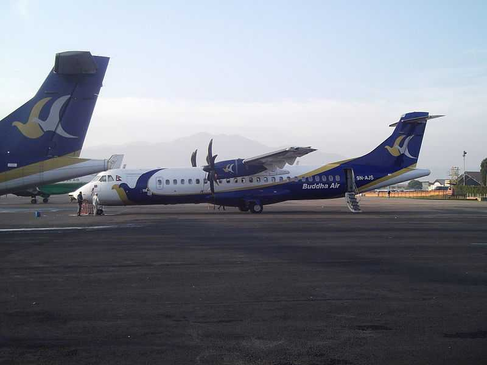

List of Airports in Nepal
The Tribhuvan International Airport in Kathmandu is Nepal's principal and only international airport. The Lukla Airport, also known as Tenzing Hillary Airport, is one of the world's most perilous airports. Because of its proximity to and encirclement by Mount Everest, landing at this airport is extremely difficult, and only a few experienced pilots are permitted to do so. Nepal has eight other domestic airports, with more under construction or undergoing renovation.
1. Tribhuvan International Airport, Kathmandu - The only international airport in Nepal

This airport in Kathmandu first opened its doors in 1955. The airbase was named after a Nepalese king in 1964. It is an extremely busy airport that juggles a large number of domestic and international aircraft on a single 4390-foot-long runway. Because of the high volume of traffic and poor infrastructure, it is known as the world's most dangerous airspace. Because of these issues, much of the aviation traffic is forced to wait or divert to India or Bangladesh before landing in Kathmandu. There are three terminals, two of which function as passenger terminals. The first is for VIP delegates from various.
Operating Airlines: For International flights - Air Arabia, Air China, Air India,Bhutan Airlines, Biman Bangladesh Airlines, Cathay Dragon,China Eastern Airlines, China Southern Airlines, Druk AirEtihad Airways, FlyDubai, Himalaya Airlines, IndiGo, Korean Air, Malaysia Airlines, Malindo Air, Oman Air, Qatar Airways, Regent Airways, SalamAir, Saurya Airlines, Shree Airlines, Sichuan Airlines, Silk Air, Thai Airways, Thai Lion Air, Tibet Airlines Turkish Airlines, Yeti Airlines
For Domestic flights - Nepal Airlines, Himalaya Airlines, Buddha Air, Shree Airlines, Saurya Airlines, Simrik Airlines, Sita Air, Tara Airlines, Yeti Airlines. Serves: Kathmandu, Nepal
Airport Codes: IATA – KTM, ICAO - VNKT
2.Lukla Airport (Tenzing Hillary Airport) - One of the most dangerous airports in the world

Lukla is one of Nepal's busiest domestic airports, with a runway length of 1729 feet and a reputation as the closest airport to Mount Everest. It was built in the 1960s under the leadership of Tenzing Norgay and Edmund Hillary, and is now known as Tenzing-Hillary Airport. It is considered the most dangerous airport in the world, which is known correctly. Apart from the short track, there is an increase of about 9500 feet, which leads to two problems, which takes less landing time. In addition, the airport is surrounded by mountains, so the landing must be out of one. The climate that is inconsistent with minimum landing assistants can further deteriorate conditions. The pilot must receive professional training from the airport staff, and must obtain a license before performing the flight operation at this airport.
Serves: Lukla, Nepal
Airport Codes: IATA – LUA, ICAO - VNLK
3. Pokhara Airport
The airport was built in 1958 to serve the sparsely populated town of Pokhara. Although serving a small city, it plays a pivotal role in the diversion airport to Kathmandu International Airport. With the growing popularity of tourist destinations, the Nepalese government has begun a large-scale renovation as an international airport. The new runway is 8,200 feet long and 147 feet wide. There will also be multiple parallel taxiways. It is planned to start in 2021. It is a company of the Civil Aviation Administration of Nepal, which connects Kathmandu and Jomsom, and occasionally has flights to Manan.
Serves: Pokhara, Nepal
Airport Codes: IATA – PKR, ICAO - VNPK
4. Simara Airport
Since the start of operations in 1958, the Simara airport has been facilitating air transport to Pipara about 16 kilometers from Birgunj. Birgunj has international trade routes to Indian cities such as Raxaul and Patna. Only Buddha Air is connected to other cities in Nepal. But for international travel, you must go to Kathmandu International Airport. Buses, taxis and trains go to Kathmandu, 71 kilometers away. The length of the slope is close to 4,000 feet and it perches at a height of 450 feet. The airport is managed by the Civil Aviation Administration of Nepal, which is reflected in the friendly demeanor of the airport staff, the neat arrangement of seats and the overall good installation of the system. It may not be the most exquisite in Nepal Airport, but hey, sometimes a pleasant welcome will dispel all your worries.
Serves: Jitpur Simara and Birgunj, Nepal
Airport Codes: IATA – SIF, ICAO - VNSI
5. Bharatpur Airport
The airport is about 1.6 kilometers from Bharatpur, the main city of the Chitwan district, and has a large number of passengers going to Chitwan National Park. With a separate 1,158m x 30m runway, all major domestic aircraft carriers operate here. After receiving strong discontent from foreigners and locals, the Nepalese Civil Aviation Administration decided to add a terminal and upgrade the runway to handle medium-size flights. Other attractions include nearby places like Tharu and Sauraha villages.
Serves: Bharatpur, Nepal
Airport Codes: IATA – BHR, ICAO - VNBP
6. Biratnagar Airport
Biratnagar Airport is one of the most important airports in Nepal because it serves the large and densely populated city of Biratnagar. Several notable Biratnagar features include a 5,000 ft x 98 ft asphalt runway and aircraft refueling facilities. Although Biradnagar is an important industrial center, it is open to many famous tourist destinations. It was previously used by the Nepalese Air Force. The Nepalese government has announced that it will become a transnational airport. The test has been carried out successfully because you are ready for it.
Serves: Biratnagar, Nepal
Airport Codes: IATA – BIR, ICAO - VNVT
7. Surkhet Airport
It is a few miles from Birendranagar and is also known as Birendranagar Airport. Like most other airports in Nepal, it has only one runway. There are mainly towns such as Jumla, Mugu and Kalikot. The main attractions of these places are ski resorts, peaceful Himalayas and pristine rivers such as Bheri and Bulbule Taal. The Nepal Air Force has used the airport before, but recently the Nepalese government and Buddha Airlines started domestic flights from Surkht. Daily flights from Surkht to Kathmandu are also provided.
Serves: Birendranagar, Nepal.
Airport Codes: IATA – SKH, ICAO - VNSK
8. Nepalgunj Airport
Return to 1961, this airport stipulates the sky of Nepal Guuni City of the Banke district. This Nepal hotel is an important business center for Mahakali, Rapti and Bheri. There are tourists from the Bardia National Park and the Bageshwari Temple for a significant percentage of individuals. The airport is one of the most busy multiple flying flights with a single asphalt track of 5000 feet x 98 feet. Flying Dragon Airlines, which is a general initiative of China and Nepal. The Nepal Private Aviation Station presented a plan to update it to the International Airport.
Serves: Nepalgunj, Nepal
Airport Codes: IATA - KEP, ICAO - VNNG
9. Jomsom Airport
This is one of the most dangerous airports in Nepal and the world. It is located at the top of the Kaligandaki River Canyon, approximately 8,900 feet above sea level, connecting the city of Jomsom with the rest of Nepal. It is the gateway to many tourist destinations, including the Muktinath Temple, which is beloved by Nepalese and Indians. It has an asphalt track that is 2,400 feet long and 66 feet wide. The route to this airport is lined with snow-covered mountains. If you take this route at the right time of the day, the sun shining on the snow-capped mountains will amaze you.
Serves: Jomsom, Nepal
Airport Codes: IATA - JMO, ICAO - VNJS
10. Bajura Airport
Bajura is a district in the Far West Development Zone of Nepal. The Bajula Airport serving the Bajula district is 4,300 feet above sea level. There is a single track 1706 feet long. The Bajula District is the seat of the Jiulemandu Temple and the Badi Malika Temple. For nature lovers, activities such as bird watching and trekking through the Himalayas of Bajura will surely amaze you.
Serves: Bajura District
Airport Codes: IATA - BJU, ICAO - VNBR
Higher altitudes and shorter runways make some airports in Nepal creepy. Although once you get off the bus, you will be able to admire the tranquil mountains where most of Nepal’s routes intersect. Many airports still only serve domestic passengers, and the Civil Aviation Administration and the Nepalese government are working to upgrade many of these airports to cater to tourists. In short, you will definitely have fun in the sky of Nepal.